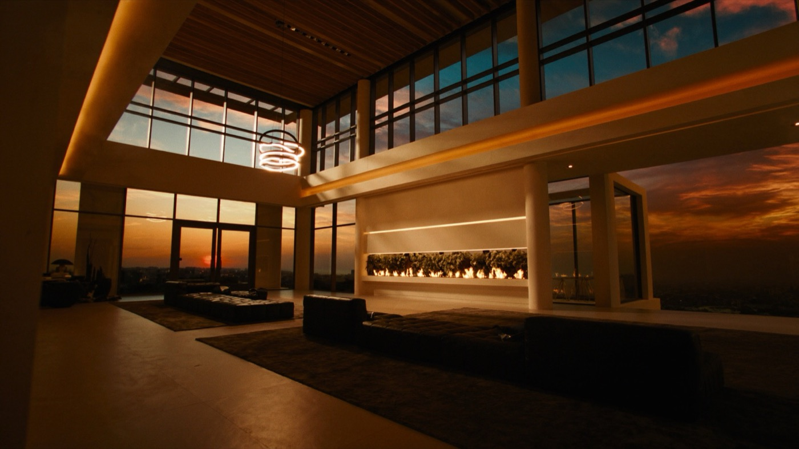

MARK.
SUL TUO COMPUTER.
Lo stesso dei miei video.
Lo accendiamo insieme, in videochiamata.
LA TUA AZIENDA,
DIGITALE.
Agenti AI che lavorano per te. Giorno e notte.
ANCHE
DAL TELEFONO.
Gli scrivi o gli mandi un vocale.
Mark al lavoro
La mando, signore?
UNA SQUADRA
CHE LAVORA PER TE.
Con i programmi che usi già.
GLI PARLI.
TI RISPONDE.
A voce, quando vuoi. Ti chiama «signore», se vuoi anche quello.
● In locale, sul tuo computer
MEMORIA
PERSISTENTE.
Non si azzera mai. Ogni giorno ricorda di più, e diventa più forte.
NON TI SERVE
UN TUTORIAL.
Da solo
Mesi di prove
Voce lenta
Memoria che si azzera
Con me
Un'ora di call
Già collaudato
Acceso quando chiudi
TRE PASSI
10 POSTI
A OTTOBRE.
Ogni Mark lo accendo io, con te.
DOMANDE
Devo saper programmare?
No. Si installa da solo, passo per passo, e in call ci sono io.
Funziona su Windows?
Sì, su Mac e su Windows. Va bene il computer che usi già.
Quanto costa al mese?
Con me nessun abbonamento. Serve il tuo abbonamento Claude, da circa 20 € al mese: è il suo cervello.
I miei dati?
Restano sul tuo computer. E niente esce a nome tuo senza il tuo sì.
Non ho un'azienda. Mi serve?
Se hai un lavoro, dei progetti o dei clienti, sì. Lo uso anche per la vita di tutti i giorni.

Cam 03 · CasaRec